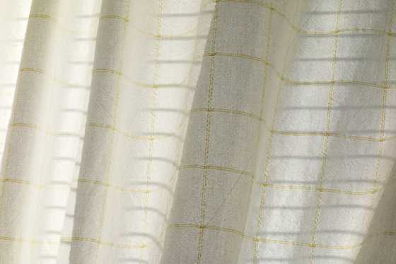

ABOUT
商店だった建物を、カフェに
カフェ ノリカロは、JR・近鉄の吉野口駅前、奈良県御所市古瀬にあるカフェです。もとは商店だった建物を改築しており、外観には旧商店の面影が残っています。店内は昭和初期の雰囲気を残すインテリアで、古いものの佇まいを活かした空間づくりがされているようです。
確認できていること
・2024年12月にオープン(Instagram紹介文より)
・駅から徒歩すぐ(Instagram紹介文では「徒歩10秒」)
・長く使えそうなカウンターが特徴(Instagram紹介文より)
・コーヒーと紅茶、本日のケーキ、ランチ(個人ブログの訪問記より)
・2024年12月にオープン(Instagram紹介文より)
・駅から徒歩すぐ(Instagram紹介文では「徒歩10秒」)
・長く使えそうなカウンターが特徴(Instagram紹介文より)
・コーヒーと紅茶、本日のケーキ、ランチ(個人ブログの訪問記より)
屋号の意味やオーナーさんの想いは確認できていないため、ここには書いていません。




MENU
一杯と、甘いもの
提供内容は、コーヒー・紅茶・本日のケーキ・ランチと伝えられています。品目や価格は 準備中 です。

コーヒー
詳細は準備中

紅茶
詳細は準備中

本日のケーキ・ランチ
詳細は準備中


VOICE
口コミ(イメージ例)
イメージ例
駅前でふっと入れる気安さがいい。古い建物の木の感じが落ち着きました。
イメージ例
電車を待つ間に、ケーキとコーヒーでひと休み。ほっとする時間でした。
イメージ例
カウンターに座って、のんびり本を読めました。また来たいです。
上記は制作側が作った例文で、実在のお客様の声ではありません。